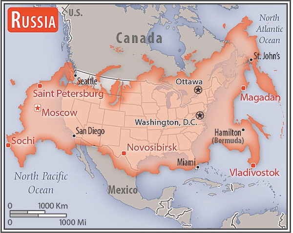

Russia
Flag

Background
Founded in the 12th century, the Principality of Muscovy emerged from over 200 years of Mongol domination (13th-15th centuries) and gradually conquered and absorbed surrounding principalities. In the early 17th century, a new ROMANOV dynasty continued this policy of expansion across Siberia to the Pacific. Under PETER I (-), hegemony was extended to the Baltic Sea and the country was renamed the Russian Empire. During the 19th century, more territorial acquisitions were made in Europe and Asia.
Defeat in the Russo-Japanese War of -05 contributed to the Revolution of , which resulted in the formation of a parliament and other reforms. Devastating defeats and food shortages in World War I led to widespread rioting in the major cities of the Russian Empire and to the overthrow of the ROMANOV Dynasty in . The communists under Vladimir LENIN seized power soon after and formed the Union of Soviet Socialist Republics (USSR).
Geography
Area comparison map
(Source https://www.cia.gov/the-world-factbook)
North Asia bordering the Arctic Ocean, extending from Eastern Europe (the portion west of the Urals) to the North Pacific Ocean
Location
North Asia bordering the Arctic Ocean, extending from Eastern Europe (the portion west of the Urals) to the North Pacific Ocean
Climate
Ranges from steppes in the south through humid continental in much of European Russia; subarctic in Siberia to tundra climate in the polar north; winters vary from cool along Black Sea coast to frigid in Siberia; summers vary from warm in the steppes to cool along Arctic coast
Space
Space agency/agencies
State Space Corporation of the Russian Federation (Roscosmos); Roscosmos was established in from a merger of the Federal Space Agency and the state-owned United Rocket and Space Corporation; began as the Russian Space Agency (RSA or RKA) in and restructured in and as the Russian Aviation and Space Agency and then the Federal Space Agency); the Russian Space Forces (Kosmicheskie voyska Rossii, KV) are part of the Russian Aerospace Forces (Vozdushno-Kosmicheskiye Sily, VKS) ()
Space program overview
Has one of the world’s largest space programs and is active across all areas of the space sector; builds, launches, and operates rockets/space launch vehicles (SLVs), satellites, space stations, interplanetary probes, and manned, robotic, and re-usable spacecraft; has astronaut (cosmonaut) training program and conducts human space flight; researching and developing a broad range of other space-related technologies; participates in international space programs such as the International Space Station (ISS); prior to Russia’s full-scale invasion of Ukraine, Russia had relations with dozens of foreign space agencies and commercial entities, including those of China, the European Space Agency (ESA), India, Japan, and the US; Roscosmos and its public subsidiaries comprise the majority of the Russian space industry; Roscosmos has eight operating areas, including manned space flights, launch systems, unmanned spacecraft, rocket propulsion, military missiles, space avionics, special military space systems, and flight control systems; private companies are also involved in a range of space systems, including satellites, telecommunications, remote-sensing, and geo-spatial services ()
Space launch site(s)
Baikonur Cosmodrome (Kazakhstan); Vostochny Cosmodrome (Amur Oblast); Plesetsk Cosmodrome (Arkhangel'sk Oblast); Kapustin Yar (Astrakhan Oblast); Yasny Launch Base (Orenburg Oblast) ()